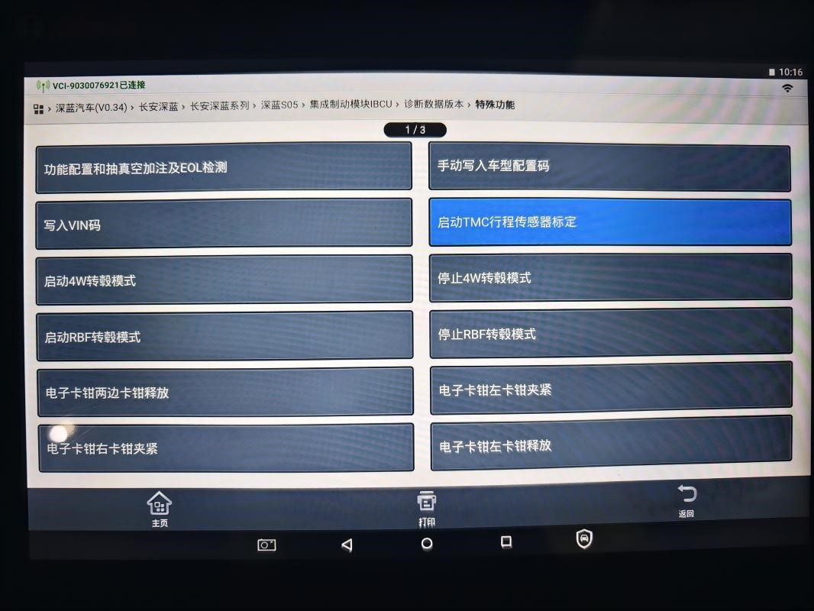

将车辆水平、静止停放，诊断仪接上车辆OBD 接口，车辆上电后，开启诊断仪。
正确连接诊断仪和车辆OBD接口，车辆上电。
写入车型配置码与轮速配置码。
确定需要写入的车型配置码与轮速配置码，各车型对应的配置码如表所示；
| 车型简称 | LEV0 | LEV1 | LEV2 | LEV3 | LEV4 | LEV5 |
| 车型号 | SC6440AAAABEV | SC6440AAAABEV | SC6440AAAABEV,SC6440AAABBEV | SC6440AAAABEV,SC6440AAABBEV | SC6440AAABBEV | SC6440AAABBEV |
| 状态号 | CNH0001 | CNH1001,CNH1002 | CNH2001,CNH2002,CNH2003,CNH2004,CNH2501,CNH2502 | CNH3001,CNH3002,CNH3003,CNH3502,CNH3501 | CNH4001,CNH4002,CNH4003,CNH4004 | CNH5001,CNH5002,CNH5003 |
| 车型变量 | 01 | 01 | 02 | 03 | 04 | 05 |
写入车型配置码的路径：诊断仪>汽车诊断>IBCU集成制动控制模块>诊断数据版本>特殊功能>手动写入车型配置码，配置码要写全，如 “01”输入01，不能只写1。路径如图所示。写入轮速类型路径：诊断仪>汽车诊断>IBCU集成制动控制模块>诊断数据版本>特殊功能>功能配置>前/后轮速类型
在正确成功写入车型配置码与轮速配置码之后，逐步后退操作界面至“电子手刹集成EPBi”的选择界面，等待仪表上不再提示驻车故障，大概需要10s。
将汽车停放于水平地面上，保证制动踏板处于未踩下状态
TMC行程传感器标定，标定路径：诊断仪>汽车诊断>IBCU集成制动控制模块>特殊功能>启动TMC行程传感器标定，点击启动例程，显示操作成功TMC行程传感器标定完成，如下图
确定无故障码和故障灯显示。
查看是否还有故障码，如果有，清除当前故障码，刷新再查看。
检查仪表板上是否还有IBCU系统相关的故障灯显示。
备注：
1.如果是更换IBCU执行机构总成零部件，且更换的IBCU执行机构总成是干式件,则需要进行加注液排气；湿式件则不需要此步骤。
2.标定时，整车4轮定位参数是否正确，车辆停放在水平地面。
3.用手持诊断仪，严格按诊断仪上的说明进行标定。